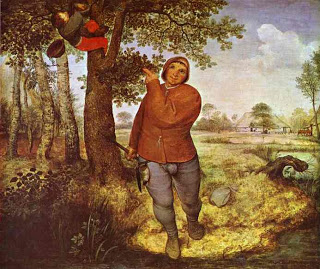

Makkot 17 - Rava's Adoration of Rabbi Shimon bar Yochai
The following also incur lashes: one who eats first fruit before its owner recites over them the verses prescribed by the Torah ; one who eats the holy offerings outside the Temple, and one who eats less holy offerings outside Jerusalem; and one who breaks a bone of a Passover lamb if it is ritually pure.
If one who takes a mother bird together with her young, Rabbi Yehudah says that he incurs lashes and does not need to send the bird away, but the Sages say that he must send the bird away, and does not incur lashes.
Rabbi Shimon derives through logic the prohibition of eating first fruit mentioned above, by comparing it to the first tithe , and on this Rava comments, "One whose mother is giving birth to him should pray that she should give birth to one like Rabbi Shimon," and proceeds to refute his logic. If so, why the praise? Because Rabbi Shimon knows how to change the order of words to arrive at what the Torah really meant.
Art: Pieter the Elder Bruegel - The Peasant and the Birdnester